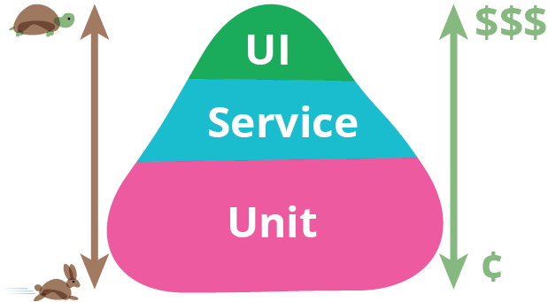

Hello World
CodeTengu Weekly 碼天狗週刊
CodeTengu Weekly 會在 GMT+8 時區的每個禮拜一早上 10:00 出刊，每一期會從目前的 curator 名單中選出三位來負責當期的內容，每個 curator 各自負責不同的領域。如果你在這一期沒有看到自已感興趣的東西，說不定下一期就會有了。你也可以瀏覽一下前幾期的內容。
以下是目前的 curator 陣容：
- @vinta - I failed the Turing Test - 科幻迷。最近在讀 More Than Human
- @saiday - Imnotyourson - 希望在離開台北之前可以見證到捷運禁止飲食廢止
- @tzangms - Oceanic / 人生海海 - 衝動型購物
- @fukuball - ImFukuball - 婚後生活
- @mingderwang - Ethereum enthusiast
- @kako0507 - 熱愛嘗試新事物的前端工程師
- @chiahsien - 我們在找 iOS 工程師與其它人才，歡迎來跟我當同事
- @hiroshiyui - 沒有人是一座孤島
- @uranusjr - Smaller Things - 不愛談技術的技術人，最近對做菜很有興趣
- @kkdai - 態度萬歲 - 喜歡 Golang 的略懂工程師
- @yhsiang
大家也可以關注我們的 Facebook、Twitter、GitHub 或微博，有很多 Weekly 看不到的內容。有任何建議或疑問也可以來 Gitter 聊聊，歡迎亂入。
 @vinta
@vinta
What happens when you type google.com into your browser and press enter?
（因為趕著回去玩 Final Fantasy XV，這一期就不多廢話了，PSN ID vintalines，大家多多指教。）
之前在面試工程師的時候，常常會問一下標題的這個問題，但是老實說能夠答得好的人真的不多呢，了解這個問題對於你平常 debug 其實是很有幫助的。不過除了技術問題之外，我也會好奇地問一下來面試的人他們是怎麼準備這次的面試的，不過讓我訝異的是，其實有不少人都支支吾吾地表示他們沒有特別準備，嗯，也不是說不行啦，只是有時候面試你的人也是花了不少時間在看你的履歷和 GitHub 上的 code，專門準備要問你哪些問題。而且更重要的是，從你怎麼準備面試，多少是可以看出你平常是怎麼做事的嘛。
9 DevOps Tips for going in production with MySQL / MariaDB Galera Cluster
StreetVoice 的資料庫前陣子換成了 MariaDB Galera Cluster，因為需要跨 data center 又得支援 multi-master 讀寫（其中一個 data center 還是在連外網路異常險惡的中國），而 Galera 基本上是對我們整個後端的程式來說改動最少的方案。
這份 Severalnines 的簡報提到了很多用 Galera Cluster 需要注意的地方，非常值得一看。如果你是 Severalnines 的會員，也可以看看他們的 Webinar 的影片。
htop explained
想必很多人都用過 htop，不過你真的都知道畫面上每個欄位或數值是什麼意思嗎？不懂沒關係，看完這篇文章你就懂了。不過更棒的是，作者還講了很多 Linux 的基本知識，學到很多啊。
Introduction to Machine Learning with Python
最近在讀這本書，真的不錯，跟大家分享一下，作者就是 scikit-learn 的核心開發者之一，讀起來（幾乎）沒有挫折感，這對初學者來說是很關鍵的啊。不過這本書並不是在教你怎麼一步一步地 implement 各種 Machine Learning 的演算法，畢竟他整本書都在用 scikit-learn 了。就像你在讀 High Performance MySQL 的時候，它也不是在教你怎麼 implement 一個資料庫的嘛。
這本書最棒的地方是他在說明每個演算法的時候都會有好幾幅精心繪製的圖表，可以讓你用非常直觀的方式了解到不同演算法之間的差異。甚至是在示範調整演算法的參數時也有把結果做成圖，所謂的 Visualization 真的很重要呢。
延伸閱讀：
- Python for Data Analysis 要出第二版了
 @saiday
@saiday

Google Testing Blog: Just Say No to More End-to-End Tests
在 app 的領域是比較少看到 End-to-End Testing 的方法討論跟工具，但參加了好幾次 MOPCON 都有 UI Testing 的議程，而 End-to-End Testing 免不了一定會包含到 UI Testing 的部分，所以下面就混在一起說好了。
這個標題乍看之下是有點重，但重點是 more End-to-End Tests，End-to-End Tests 有它不可取代的必要性，但不要因為 UI Testing 或是 End-to-End 的概念上很吸引人而做了過多不必要的測試，這樣並不會帶來等量的助益，只是在消耗你的開發資源。
附圖是 Testing Pyramid，轉載自 Martin Fowler 的部落格 TestPyramid，大概就是說越高階的測試跑得越慢、要花更多資源去寫跟維護。這個測試三角形跟 Google 在文章裡提到的測試方法分配分別是 70% unit tests, 20% integration tests, 10% end-to-end tests 也是不謀而合。
而我個人認為這篇文章的精華在這句：
Thus, to evaluate any testing strategy, you cannot just evaluate how it finds bugs. You also must evaluate how it enables developers to fix (and even prevent) bugs.
Intelligence in Mobile Applications
機器學習現在非常熱門，相關的平台跟服務也是大量的湧現出來。
如果想要做 語音辨識、臉部辨識、自然語言處理、預測系統 這類的東西，有哪些第三方的服務可以加速你的開發呢？
這篇文介紹了 mobile app developer 可以應用的服務：
面向协议编程与 Cocoa 的邂逅 (上)
王巍 對 POP (Protocol Oriented Programming) 的介紹跟想法。標題寫的是「與 Cocoa 的邂逅」，表示這不只是一篇關於 POP 的理論介紹，包含了一些日常中很實際的應用。
用 POP 而非 OO 的原因王巍列出這三點：
- 動態派發安全性 (Dynamic dispatch)
- 橫切關注點 (Cross-Cutting Concerns)
- 菱形缺陷 (Diamond Problem)
POP 的應用上，你所需要掌握的工具：
- protocol extension
- protocol associatedtype
這兩篇網誌是由他自己的 這份簡報 延伸出來的，簡報十分完整，推薦可以先看簡報。
Mastering the Terminal side of Android development
不多說了，直接用文內的 TL;DR
- Install iterm2, a better terminal than the default one
- Use the oh-my-zsh shell with autosuggestions
- compact the commands ./gradlew iDD
- Run the commands faster by using the offline flag --offline
- Pretty print your tests
- Don’t manually open the app on the phone after install, use this plugin to automate it
- Attach the process to debugger without restarting the app in debug mode
- Enjoy a more convenient logcat output with pidcat
 @kkdai
@kkdai
GDG DevFest Taipei 2016 - In Love with Golang
GDG Dev Fest 是 Google Developer Group Festival Taipei ( Google 開發者群組嘉年華會 ) GDG DevFest 之前在 GTG 有人問我，為何大家投影片不用 Golang Present 來做．所以我為了 GDG Dev Fest 做好了 Golang Talk 的投影片．
How to avoid Go gotchas (如何避免 Golang 的雷 (坑))
如何避免 Golang 的坑？
一半而言坑的原因有兩種： 錯誤的語言跟錯誤的直覺。
而錯誤的直覺往往在於對於語言本身的架構與原理夠不夠了解。
這篇文章詳細了介紹 slice 與 interface 的原理，並且講解常常會踩到坑的原因。
Go 1.8 toolchain improvements
Dave Cheney 解釋預計在 2017/01/31 將要釋出的 Go 1.8 主要在 toolchain 上的優化． 其中包含有:
編譯得更快: Go 1.7 就支援了 SSA(Static single assignment) 但是由於相容舊的方式，留了不少舊的架構． 1.8 完成了所有的優化並且拔光舊有的架構． 可以讓你編譯得更快， 雖然比不上 Go 1.4 (因為當時用 C 來做底層 Compiler 1.5 之後換成 Go 原生來編譯 Compiler ) ，但是也有長足的進步．
Code Generation 的優化: 對於 Code 分析與產生 (go gen) 有著些許的優化與速度提升．
Defer 與 cgo 的效能提升: Defer 提升 33% 而 cgo 提升 45%
平台支援: Go 1.7 支援 64-bit mips, Go 1.8 支援 32-bit mips
How to write your own Go tool
Fatma Arslan (vim-go 的作者) 介紹了如何透過 go/ast go/parser 與 go/printer 來製作 golang 的小工具， 並且透過 gofmt 的 use case 來解釋如何透過這些工具來製作．
Random Cool Stuff
Language Spam – The Latest Google Analytics Spam
上次打開 Google Analytics 發現來訪的語言欄位有大量 Secret.ɢoogle.com You are invited! Enter only with this ticket URL. Copy it. Vote for Trump! 紀錄。
當下忍不住笑了出來，詭異的句子有一種莫名的喜感。
這篇是我看到比較詳細的說明也提供了解法。
由 @saiday 提供。